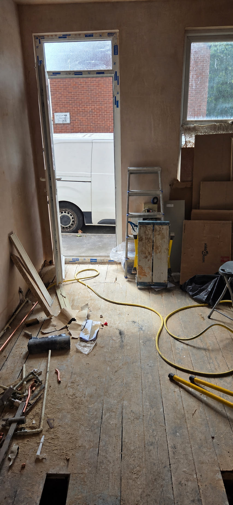

Landlord property repairs
Property repairs for Nottingham landlords, without the chasing.
Re-Let handles practical landlord property repairs in Nottingham, from everyday maintenance issues to planned repair lists for occupied homes and void properties.
Landlord property maintenance in Nottingham, clearly scoped
Send the address area, a description and useful photos. We’ll advise whether the work can be scoped from those details or needs a visit first.
- Minor internal repairs and making good
- Door, lock, handle and hinge issues
- Skirting, architrave and timber repairs
- Replacement-window installation and making good
- Damaged fixtures and fittings
- Planned maintenance lists
- Post-tenancy remedial work
For regulated gas or electrical work, the correct qualified specialist should be used. We won’t imply coverage beyond the agreed scope.
For work between tenancies, combine repair items into a Nottingham void property turnaround. Letting-agent teams can also use our property maintenance service for Nottingham letting agents. See the areas around Nottingham we cover.


What happens next
A simple route to a usable scope
1. Share the issue
Include the property postcode, occupancy status, photos and any access constraints.
2. Clarify the work
We’ll ask focused questions and identify whether an inspection is appropriate.
3. Agree the next step
Confirm the scope and timing before work is arranged.
Have a repair list ready?
Send it with photos and the property postcode for a clear first response.
A more useful repair brief
Separate the symptom, cause and making-good work
A repair request is easier to assess when it explains what is happening now, what changed beforehand and which part of the property is affected. Photographs of both the detail and the wider area help avoid an overly narrow scope.
Useful items to group
- Doors, frames, handles, locks and internal timber
- Damaged fittings, trim and everyday wear items
- Local making good after an agreed repair
- Prioritised maintenance lists for a void or occupied property
For landlords and agents
State whether the property is occupied, who can authorise work and how access should be arranged. For portfolio work, use one job reference and one agreed communication route.
Questions
Frequently asked questions
Clear starting points for scoping this service.
What information helps with a repair enquiry?
Send the property postcode, a short description, clear photographs, occupancy status and any access constraints. Explain what has changed and whether the issue affects everyday use.
Can several small repairs be grouped into one visit?
Yes. Put the items into one prioritised list with a photograph for each where possible. Re-Let can then clarify which items fit one scope and which need separate assessment.
What happens if the issue may require regulated work?
The issue should be identified clearly and directed to an appropriately qualified specialist where required. A cosmetic repair should not be used to hide a cause that needs specialist assessment.
Tell us what the property needs
Share the postcode, photographs, occupancy and priorities to start a practical conversation.